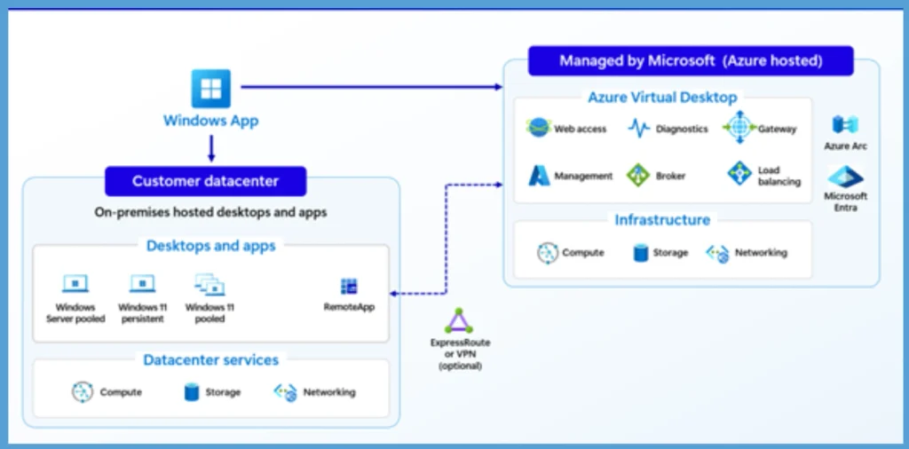
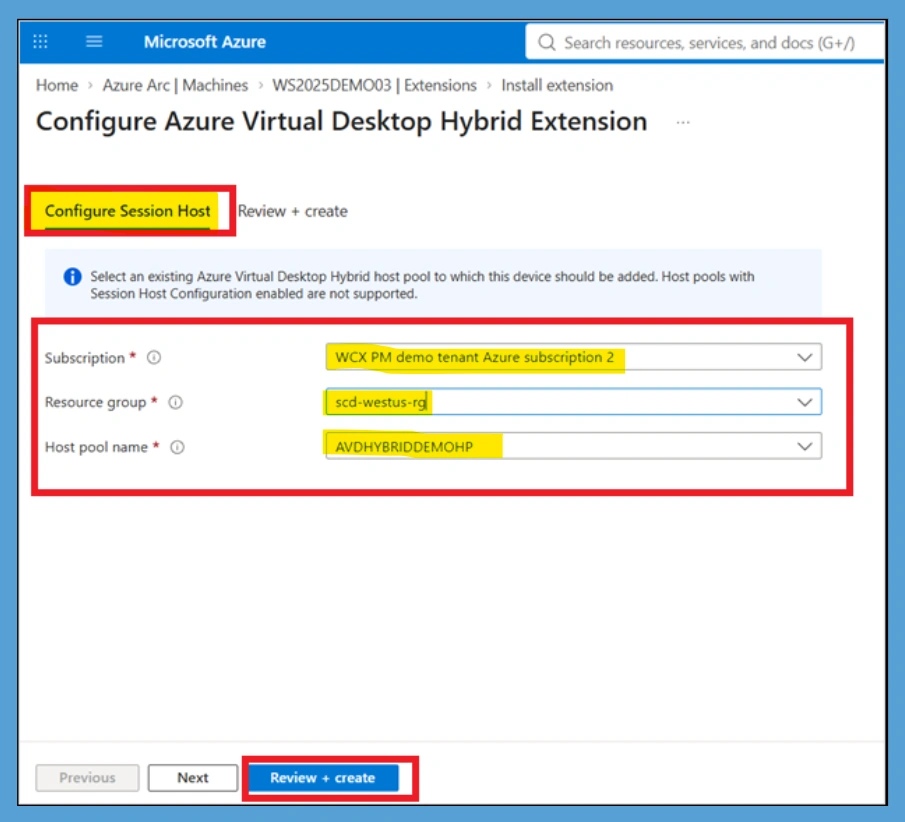

Key Takeaways
- Azure Virtual Desktop Hybrid is now generally available for organizations that want to run Azure Virtual Desktop session hosts outside the Azure cloud.
- Session hosts can remain in customer datacenters and run on existing infrastructure and supported hypervisors.
- The Azure Virtual Desktop cloud service provides centralized management, session brokering, and user connectivity.
- Communication uses outbound HTTPS connectivity, helping reduce network complexity and eliminating the requirement for inbound connectivity.
in this post we are discussing, Azure Virtual Desktop Hybrid to Run Session Hosts On-Premises Without Full Cloud Migration. Microsoft has announced the general availability of Azure Virtual Desktop Hybrid, allowing organizations to extend Azure Virtual Desktop to their on-premises and edge environments. Azure Virtual Desktop Hybrid is useful for organizations that are not ready to move their entire virtual desktop infrastructure to the cloud. It allows them to use their existing hardware, hypervisors, and operational processes while gradually adopting Azure-based management capabilities.
Table of Contents
Azure Virtual Desktop Hybrid to Run Session Hosts On-Premises Without Full Cloud Migration
With Azure Arc, organizations can connect their on-premises machines to Azure and configure them as Azure Virtual Desktop session hosts. This provides a flexible way to modernize existing VDI and RDS environments without requiring an immediate full cloud migration. Azure Virtual Desktop Hybrid gives organizations more choice in how they deliver virtual desktops and applications.
What is New
The general availability of Azure Virtual Desktop Hybrid introduces a new deployment model for organizations that want the benefits of Azure Virtual Desktop while keeping session hosts in their own infrastructure. Instead of requiring all session hosts to run as Azure virtual machines, organizations can run their desktops and applications in an existing customer datacenter or edge environment. The machines can remain on the organization’s preferred infrastructure while Azure provides the centralized Azure Virtual Desktop control plane.
Azure Virtual Desktop Hybrid Architecture Overview
The below image you can see that the architecture of Azure Virtual Desktop Hybrid. Here, session hosts run in your datacenter on your hypervisor of choice. Azure Virtual Desktop Hybrid connects on-premises session hosts in a customer datacenter with the managed Azure Virtual Desktop control plane. Azure Arc helps connect the on-premises infrastructure to Azure, while users access desktops and applications through the Windows App.
| Azure Virtual Desktop Hybrid uses the following architecture |
|---|
| Session hosts run in your datacenter on your hypervisor of choice. |
| Azure Arc connects those machines to Azure. |
| The Azure Virtual Desktop Hybrid extension configures Azure Arc VMs as Azure Virtual Desktop session hosts. |
| The Azure Virtual Desktop cloud service provides session brokering and user connectivity. |
| Users access desktops and apps through Windows App. |

Configure the Azure Virtual Desktop Hybrid Session Host
Configure Session Host page for the Azure Virtual Desktop Hybrid extension. Administrators need to select the Subscription, Resource Group, and Host Pool name to add the Azure Arc-enabled machine to an existing Azure Virtual Desktop Hybrid host pool. After selecting the required options, they can continue with Review + create to complete the configuration. To get Started:
- Create your VM using your preferred methods
- Install and configure Azure Arc
- Install the Azure Virtual Desktop Hybrid extension
- Select a host pool for the session host

Need Further Assistance or Have Technical Questions?
Join the LinkedIn Page and Telegram group to get the latest step-by-step guides and news updates. Join our Meetup Page to participate in User group meetings. Also, Join the WhatsApp Community and WhatsApp Channel to get the latest news on Microsoft Technologies. We are there on Reddit as well.
Author
Anoop C Nair is Workplace Technology solution architect with 25+ years of experience in global enterprise organizations such as JP Morgan, Capgemini, etc. He is Microsoft Certified Trainer. Microsoft MVP from 2015 onwards for consecutive 11 years! He also conducts Intune and modern workplace tech training for enterprise organizations. He is Blogger, Speaker, and Founder of HTMD Community and HTMD Conference. His focus is on Device Management technologies such as Intune, Windows, Cloud PC. He writes about technologies like Intune, SCCM, Windows, Cloud PC, Windows, Entra, Microsoft Security.